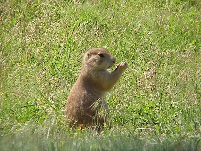
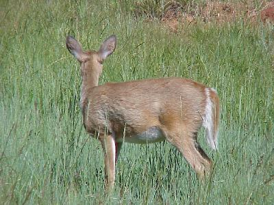
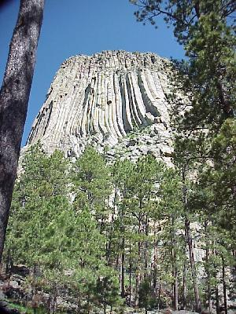
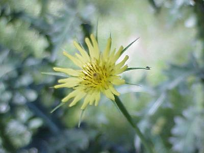
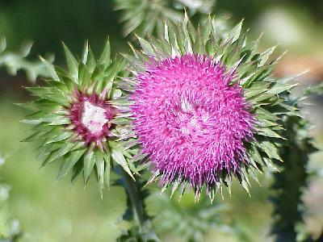
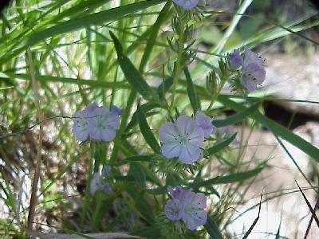
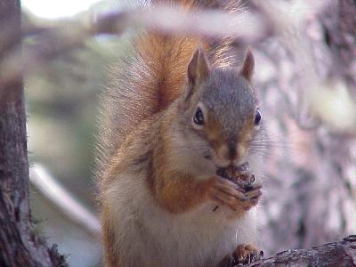
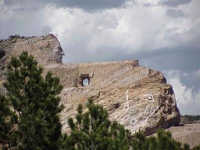
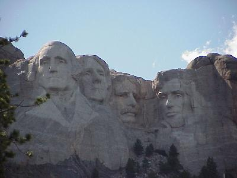
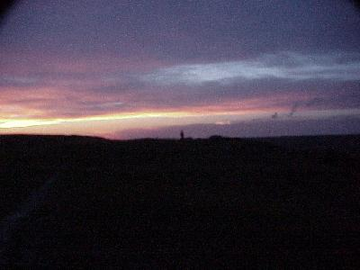

June 20, 10,076 miles
Yesterday we passed the 10,000 mile mark!
| We started the day early, checking out at 8:00. The weather was great, if not a little on the hot side, 85-90 degrees all day! | |
| Our first stop, Devil's Tower. On the way into the National Park we saw a number of antelope, deer and praire dogs. But once in the park you really see praire dogs at Praire Dog Village. |  |
| In the park we also saw a number of deer, who cooperated a little better on getting their picture taken, although they were shy and would not look towards the camera. |  |
| Well, the star of this park is the big rock in the middle they call Devil's Tower. |  |
| The ever popular wild flowers were also present in the park, and we added a few more to the list. |  |
| This thistle may, or may not be considered to be a wild flower, but its color and size were astounding. |  |
| And, just as were were about to leave, we picked up one last wild flower at Devil's Tower. |  |
| I guess if we are going to include some small rodent like the praire dog in our picture list we should also include the red squirrel, after all, those eagles soaring around Devil's Tower wouldn't mind having either one for lunch. |  |
| The next stop was the Crazy Hourse monument, which is NOT being built with our tax dollars. The monument is not complete, and most likely will not be or another 20+ years. |  |
| And then there is Mount Rushmore. This place has changed a lot since I was last here ~25 years ago. Large parking decks, visitor's center, and walk way toward the mountain. |  |
| As we drove east we watched some fantastic storms and
lightning to the north, but we never quite caught up with
them, all except for about 5 minutes of rain, during
which we watched a vivid rainbow ahead of us. This is a picture of the sunset from our campground. |
 |
| To log some miles towards home we it the
road for a few hours, checking into camp at about 8:30
after 307 miles. It was a good thing we had already eaten,
the mosquitos were terrible, we did a little hiking
around and were eaten alive. It was also about 85 degrees
out, so we cleaned up and went to bed early. The campground we stayed in was a primitive campground (no water), well off the highway, some 15 miles by gravel road, but there were still some 18 campers there. Wildlife for the day included: praire dogs (lots); pronghorn antelope (30); and deer (8). |
|